Juego de carreras
En este tutorial mostraremos como realizar el clásico juego de carreras y esquivar obstáculos en Pilas Engine.
El juego se basa en un auto como actor principal el cual transita una carretera en la cual aparecen variados obstáculos y se deben esquivar.
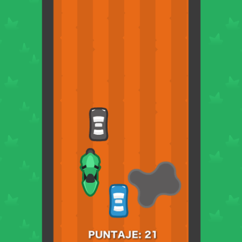
Paso 1: Colección de gráficos.
Antes de comenzar a desarrollar el videojuego, ingresamos al siguiente link para descargar una colección de gráficos de carreras que luego utilizaremos.
Paso 2: Creamos nuestro actor principal
Abrimos el editor de pilas, y eliminamos a todos los actores iniciales de la escena1. Luego, dentro de la sección de “ESCENAS Y ACTORES” seleccionamos la opción “Crear actor”:
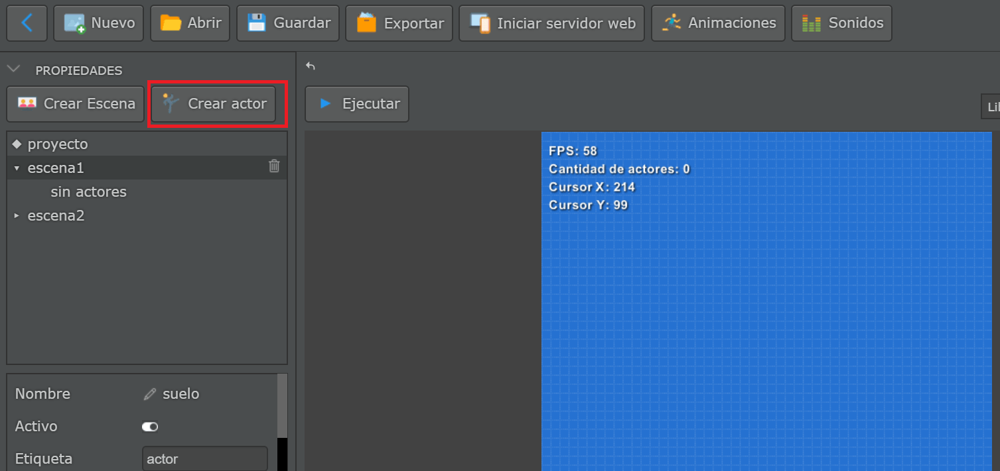
Seleccionamos la opción “actor”:
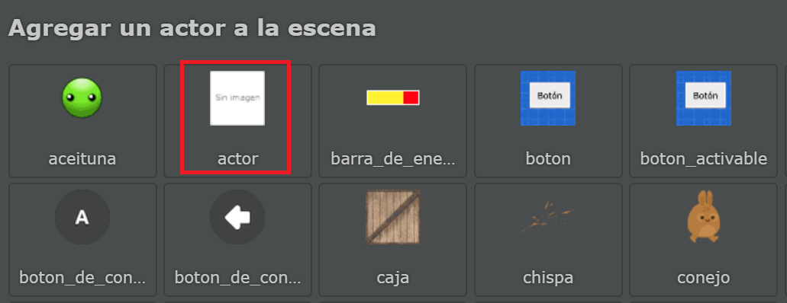
Una vez creado el nuevo actor, pasamos a modificar sus propiedades para darle la apariencia y el comportamiento que deseemos.
Primero iremos a la propiedad imagen del actor, y elegiremos la imagen del auto de la siguiente forma:
Necesitaremos importar la imagen del auto deseado desde el botón “Importar imagen” y buscando donde hayamos descomprimido la colección de gráficos. Una vez importada, podremos seleccionarla para nuestro actor.
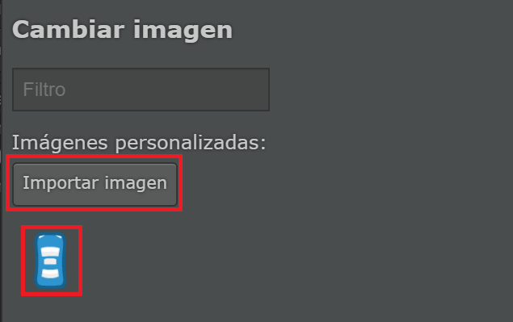
Luego cambiamos su nombre, etiqueta y la posición inicial (x,y).
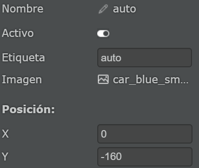
Ahora programaremos el comportamiento de nuestro auto de carreras para que pueda desplazarse en la escena. Para hacerlo, iremos a la sección de “Editor de código” ubicada a la derecha del editor, y agregaremos el siguiente fragmento de código:
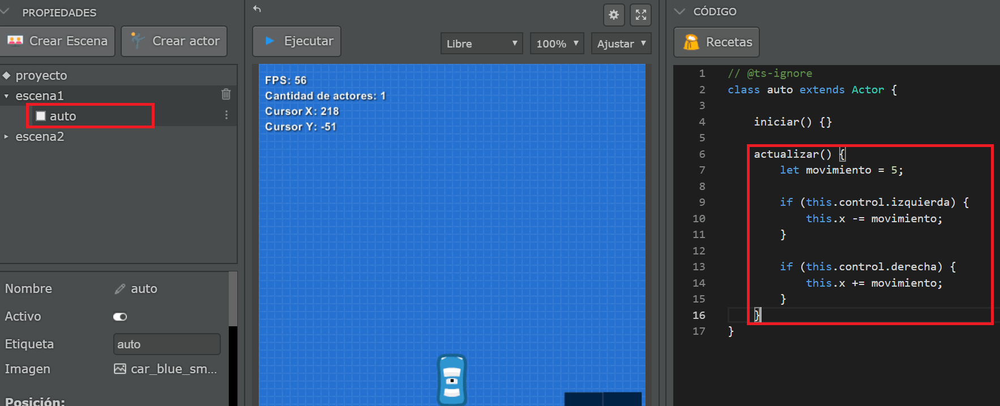
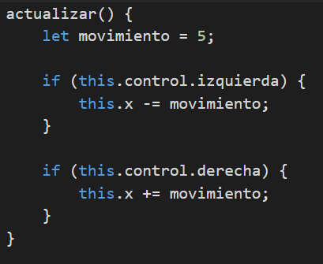
-
En la función actualizar() crearemos una variable “movimiento” la cual utilizaremos para establecer la velocidad con la cual se desplazará el auto en la pantalla. Se le puede asignar el valor que cada uno crea correcto, en nuestro caso asignamos un valor de 5.
-
Luego de eso, agregaremos 2 sentencias “if” para que el jugador pueda desplazar el auto hacia la izquierda o derecha para esquivar o moverse durante el juego.
Paso 3: Creamos paredes
Ahora vamos a crear las paredes de la ruta por donde se desplazará nuestro vehículo. Para eso vamos la opción “Crear actor” nuevamente y seleccionamos el tipo “pared”.
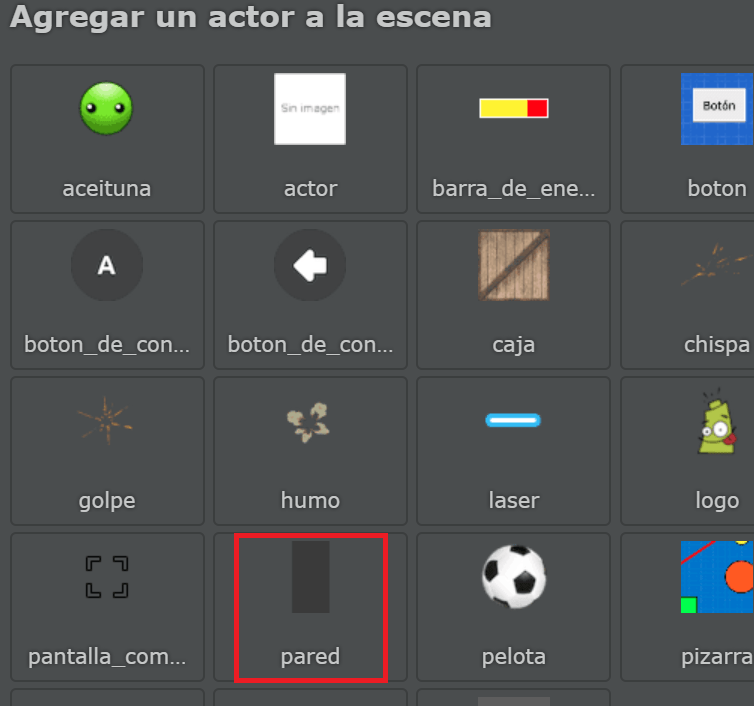
Una vez hecho esto, nos dirigimos a sus propiedades y cambiamos su nombre, etiqueta, y posición inicial. Estos valores los podemos variar a lo que creamos adecuado para el ancho de la ruta.
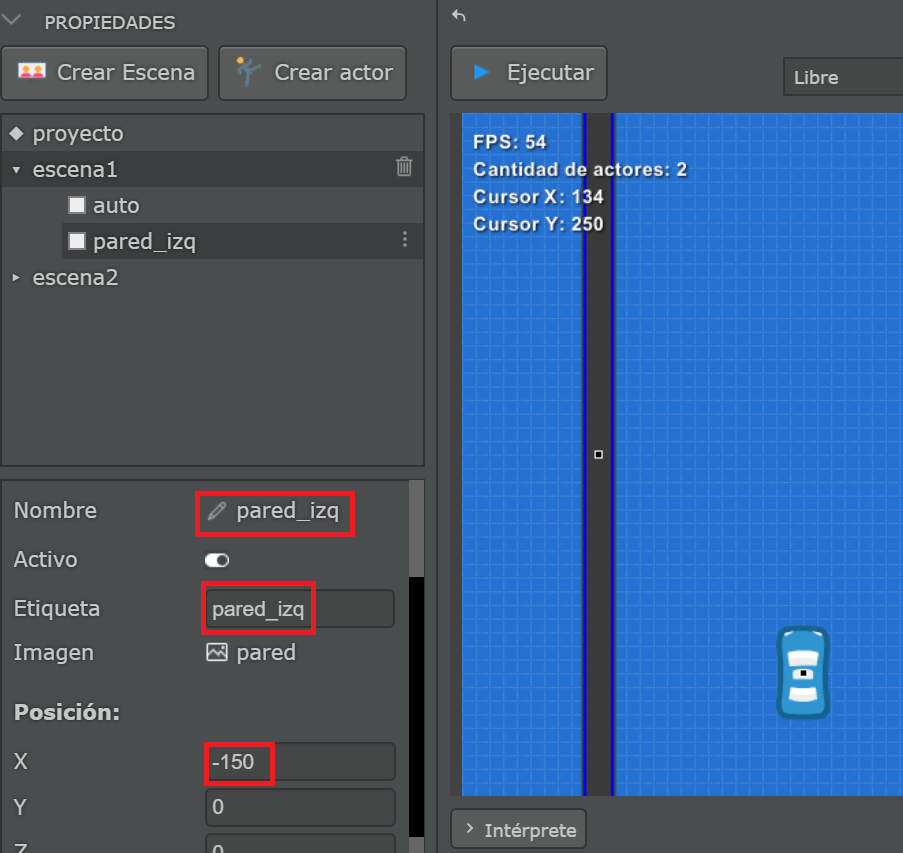
Listo! Ya tenemos nuestra pared izquierda, ahora duplicamos este actor para crear la pared derecha. Para ello hacemos click en el icono que se muestra sobre el actor “pared_izq” y seleccionamos “Duplicar este actor”.
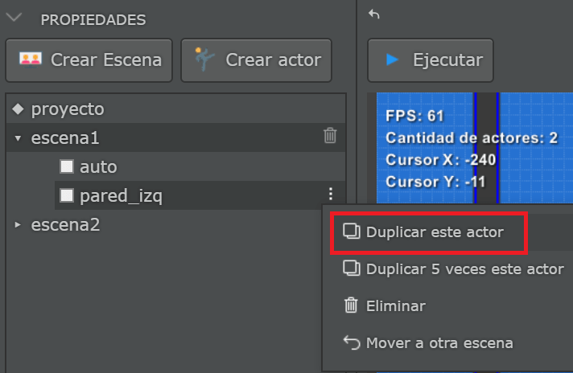
Al nuevo actor, le cambiamos nombre, etiqueta y posición inicial para qué se comporte como la pared del lado derecho.
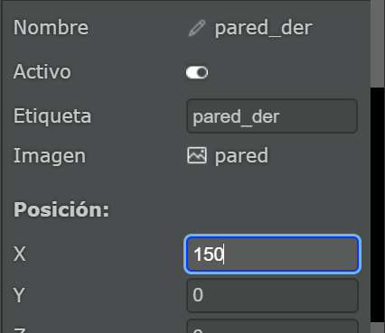
Una vez finalizado esto, tendremos algo como se muestra en la imagen y estaremos listos para el próximo paso, donde programaremos el comportamiento de nuestro vehículo cuando colisione contra alguna de las paredes que creamos.
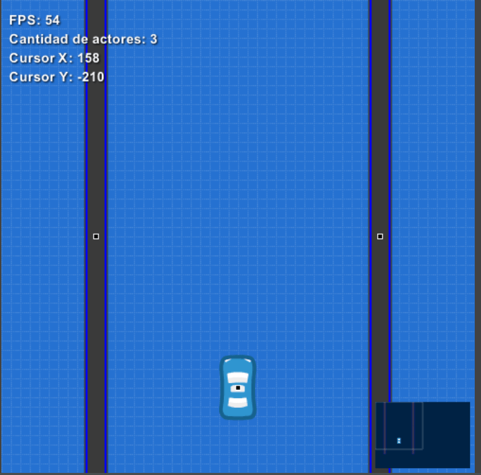
Para simular el choque de nuestro vehículo con alguna de las paredes, debemos crear un nuevo actor que entrará en pantalla cuando nuestro actor principal colisione. Nos dirigimos nuevamente a la opción “Crear actor”:
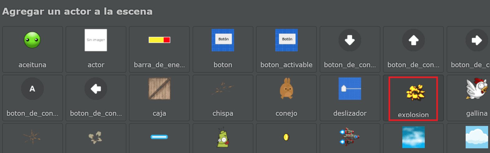
Seleccionamos “explosión”, y en sus propiedades marcamos al actor como inactivo inicialmente.
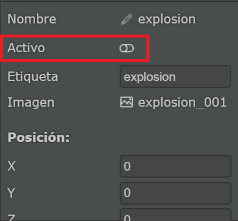
Antes de programar la colisión de nuestro vehículo, vamos a las propiedades del mismo y le damos una forma rectangular para que este pueda chocar.
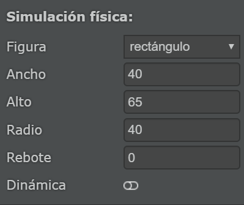
Ahora programaremos la colisión de nuestro vehículo. Para ello nos dirigimos al “Editor de código” de nuestro actor principal y agregamos el siguiente fragmento de código:
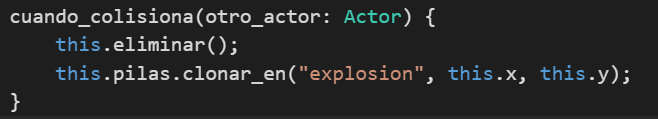
Este fragmento lo que hace es que cuando nuestro actor colisione contra otro actor, se elimine y muestre el actor de “explosión” en el mismo lugar donde el actor principal colisionó.
Ahora nos faltaría agregar un nuevo actor para poder reiniciar la escena en caso de una colisión.
Para eso nos dirigimos nuevamente a la opción “Crear actor” y elegimos “Botón”
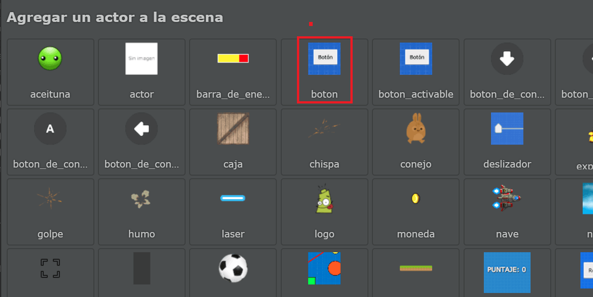
Luego nos dirigimos a las propiedades del nuevo actor y modificamos nombre, etiqueta, lo marcamos como inactivo y modificamos el texto del botón.
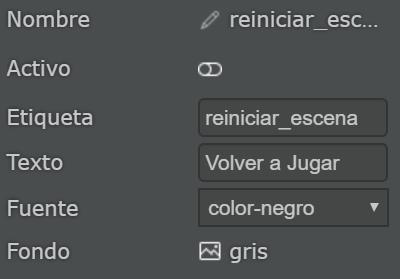
Ahora nos dirigimos al editor de código para el nuevo botón y modificamos la función “cuando_hace_click” para que reinicie la escena al pulsar sobre el botón.
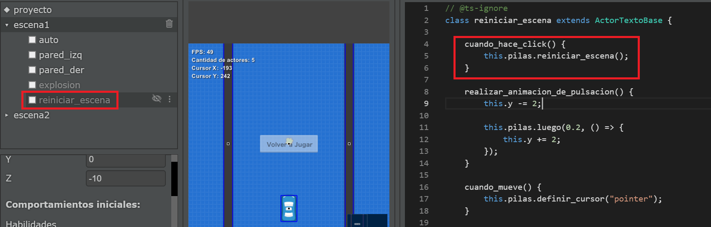
Lo único que nos queda por hacer es modificar la función “cuando_colisiona” del actor principal para clonar el botón de reiniciar escena en ese momento.
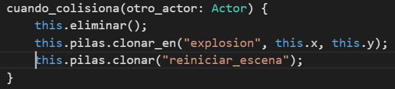
Paso 4: Creamos nuestro primer obstáculo
Ahora vamos a crear un obstáculo que será el que aparecerá en escena aleatoriamente, el cual el vehículo deberá esquivar.
Para eso vamos a la opción “Crear actor” nuevamente y seleccionamos “actor”.
Nos dirigimos a las propiedades del actor para modificar su nombre, etiqueta, posición inicial, figura, estado inactivo e imagen (la cual importamos nuevamente desde la colección descargada).
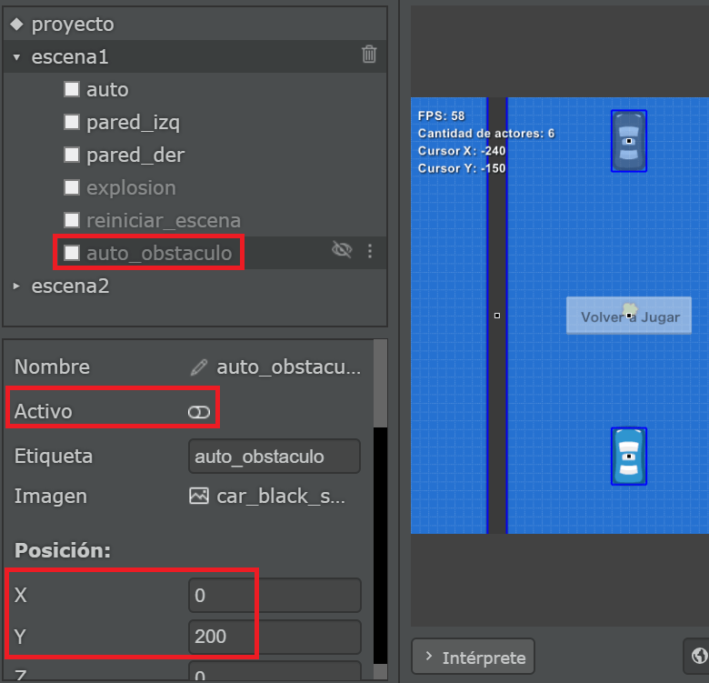
Ahora pasamos a programar su comportamiento. Para eso vamos al editor de código del actor “auto_obstaculo” y definimos las funciones iniciar() y actualizar() de la siguiente manera:
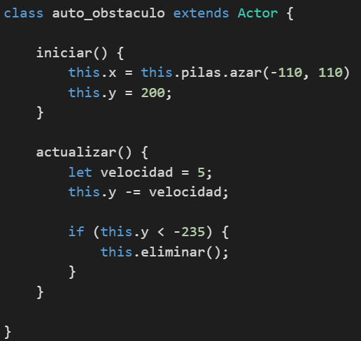
-
La función “iniciar” lo que hace es generar aleatoriamente la coordenada x inicial del actor, eso lo hacemos para que no aparezca siempre en el mismo lugar y el actor principal deba moverse para esquivar los obstáculos.
-
La función “actualizar” emula la velocidad con la que se moverá el actor “auto_obstáculo”, de la misma forma que lo hicimos para los movimientos del actor principal. Además al llegar a la coordenada
Y = 235, el actor desaparece de escena.
Listo!, ahora debemos hacer que el actor “auto_obstaculo” aparezca en escena a medida que el juego transcurre. Para eso vamos al editor de código de “escena1” y agregamos la siguiente función:
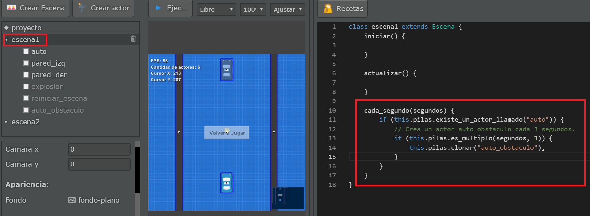
La función “cada_segundo”, lo que hace es clonar un actor “auto_obstaculo” cada 3 segundos, siempre y cuando exista un actor “auto”. Esta última condición la agregamos para que no sigan apareciendo obstáculos una vez que perdimos.
Sí prueban la escena ahora, verán que cada 3 segundos aparece un actor “auto_obstaculo” con posición aleatoria, el cual debemos esquivar para no perder.
Paso 5: Nuevos obstáculos
Ahora pasaremos a crear nuevos obstáculos que podrán aparecer en escena. Primero crearemos un actor tipo “motocicleta”, cuya forma será más pequeña que la del auto por ende será más fácil esquivar. Para eso vamos al actor “auto_obstaculo” y clickeamos en “Duplicar este actor”.
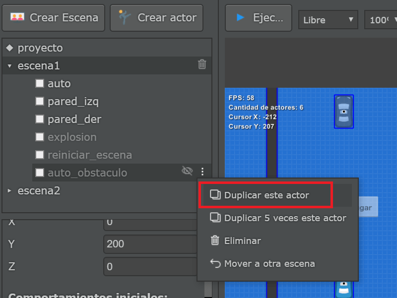
Al nuevo actor le modificamos su nombre, etiqueta, estado, imagen (la cual tomaremos nuevamente de la colección racing-pack) y la figura a la cual responde.
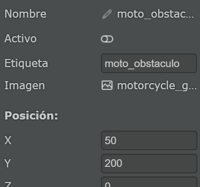
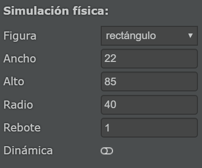
Además, debemos ir al editor de código del actor “moto_obstaculo” para modificar su velocidad, ya que pretendemos que sea un obstáculo más pequeño y además su velocidad sea más lenta que la de “auto_obstaculo”.
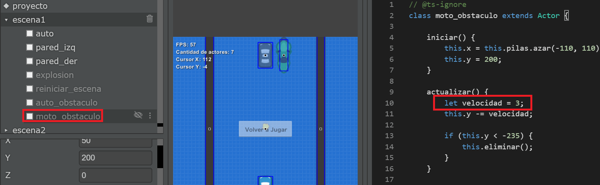
Ahora debemos ir nuevamente a la función “cada_segundo” de “escena1” para poder hacer que aparezcan los obstáculos tipo “motocicleta” a medida que transcurre el juego.
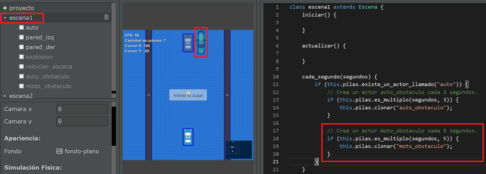
Perfecto! Ahora llegó la hora de crear un nuevo actor tipo “aceite” el cual no nos hará perder al colisionar contra él, sino que nos cambiará nuestra trayectoria y puede hacernos chocar contra otro obstáculo.
Para eso vamos a duplicar el actor “moto_obstaculo” que creamos anteriormente y modificaremos su nombre, etiqueta, estado, imagen (también obtenida de la colección racing-pack) y figura.
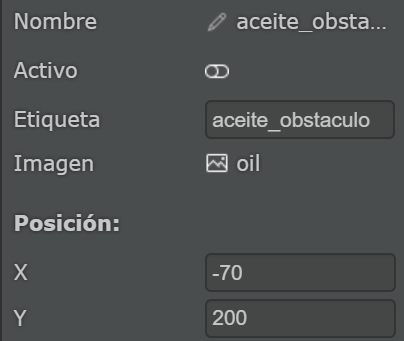
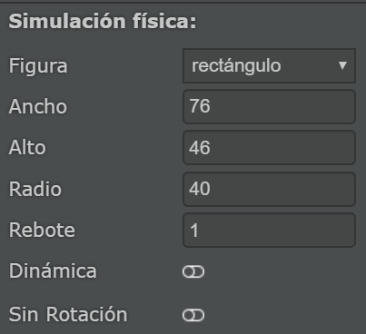
Ahora nos dirigimos al editor de código del nuevo actor “aceite_obstaculo” y modificamos:
-
Su velocidad ya que es el obstáculo que más rápido se moverá en la escena.
-
Los valores extremos para la función azar, ya que al ser más ancha la imagen de la mancha de
-
aceite, puede parecer que está fuera de la ruta.
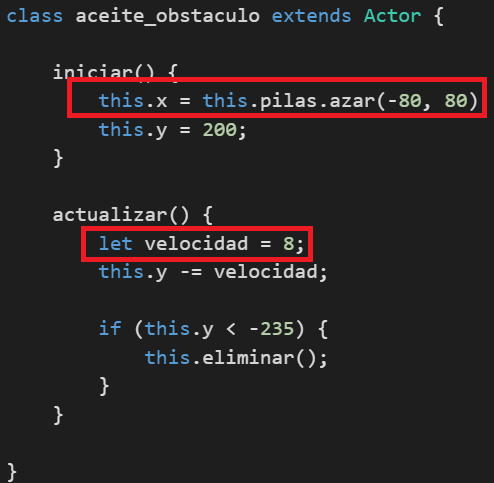
Como hicimos con el actor “moto_obstaculo”, hay que agregar el nuevo actor a la función “cada_segundo” de la escena para que aparezca el aceite aleatoriamente.
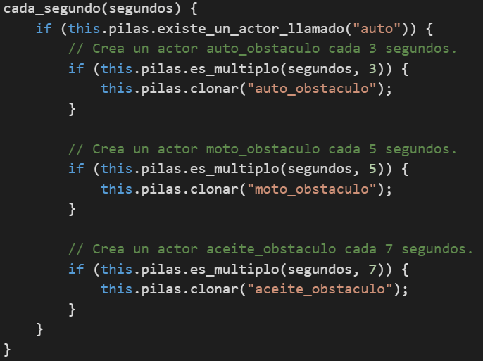
Así quedará la función, la cual hará que cada 3 segundos aparezca un auto, cada 5 segundos aparezca una moto y cada 7 segundos aparezca una mancha de aceite. Estos valores los podemos ajustar de acuerdo al gusto de cada uno.
Bien! Ahora sí ejecutan el juego notará que al colisionar con la mancha de aceite, el auto se destruye y perdemos. Lo que queremos hacer es que la mancha de aceite modifique la trayectoria del vehículo principal. Para eso nos vamos al editor de código del actor “auto” y modificamos la función “cuando_colisiona” de la siguiente manera:
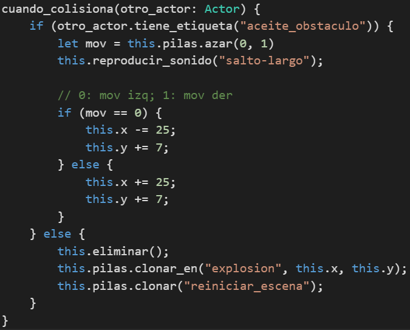
- Si observan la nueva función, notaran que agregamos un tratamiento para realizar una acción si el otro_actor es de tipo “aceite_obstaculo”. Lo que hacemos es reproducir un sonido y a través de la función “azar” generar 2 tipos de movimientos que harán que nuestro vehículo se mueva en diagonal hacia la izquierda o hacia la derecha.
Luego de esta modificación, notaran que al colisionar con una mancha de aceite, el auto cambia de dirección.
Paso 6: Puntaje y ambientación
Bueno, ya estamos llegando al final de la creación del juego. Para este último paso crearemos un puntaje que se irá incrementando a medida que transcurre el juego y además agregaremos ambientación para darle una mejor apariencia a la escena del juego.
Para crear el puntaje nos vamos a la opción “Crear actor” y seleccionamos el tipo “puntaje”:
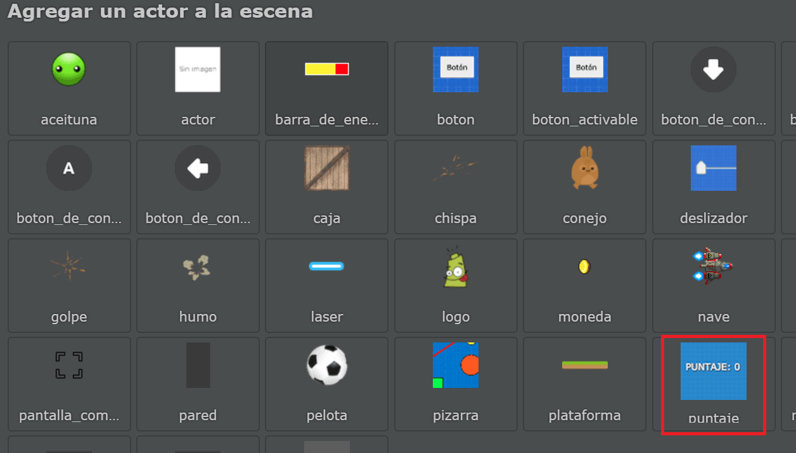
Luego cambiamos su posición inicial (lo situamos en la parte inferior de la pantalla):
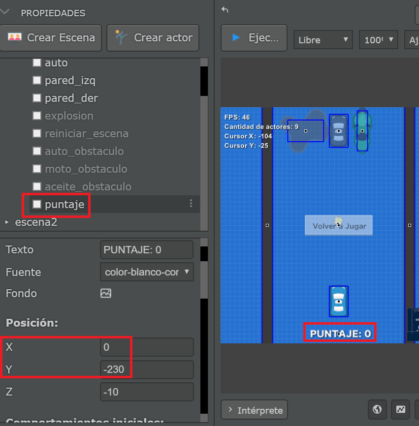
Ahora debemos hacer que el puntaje se incremente a medida que transcurre el juego, para eso iremos nuevamente a modificar la función “cada_segundo” de la “escena1” de la siguiente manera:
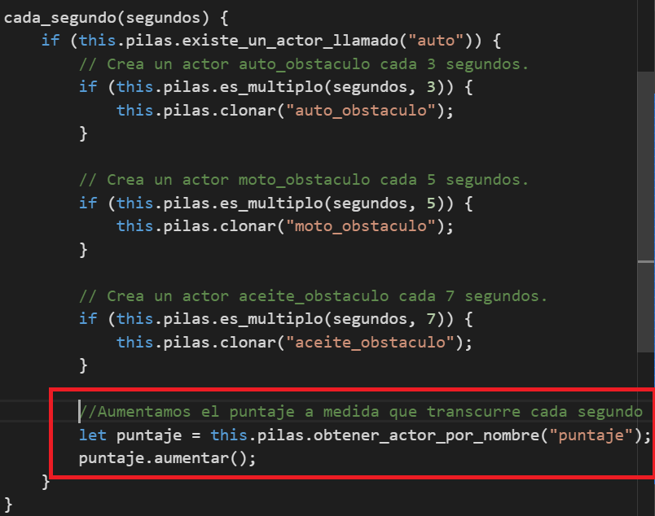
PERFECTO! Ahora solo nos queda cambiar la ambientación del juego.
Para esto último primero cambiaremos el fondo de la escena a un fondo más uniforme tipo rojo:
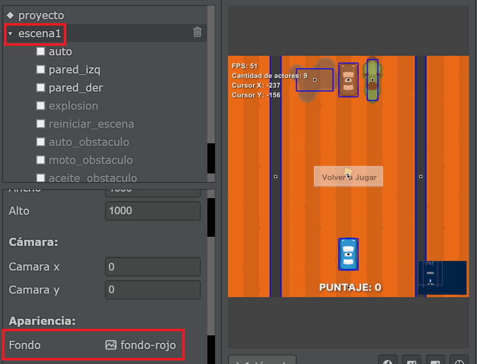
Ahora crearemos la hierba de los costados de la ruta. Para esto utilizaremos una técnica de duplicación de actores.
Primero crearemos un nuevo actor:
Al nuevo actor le cambiamos el nombre, etiqueta, posición inicial e imagen que simulara la hierba a los costados de la ruta.
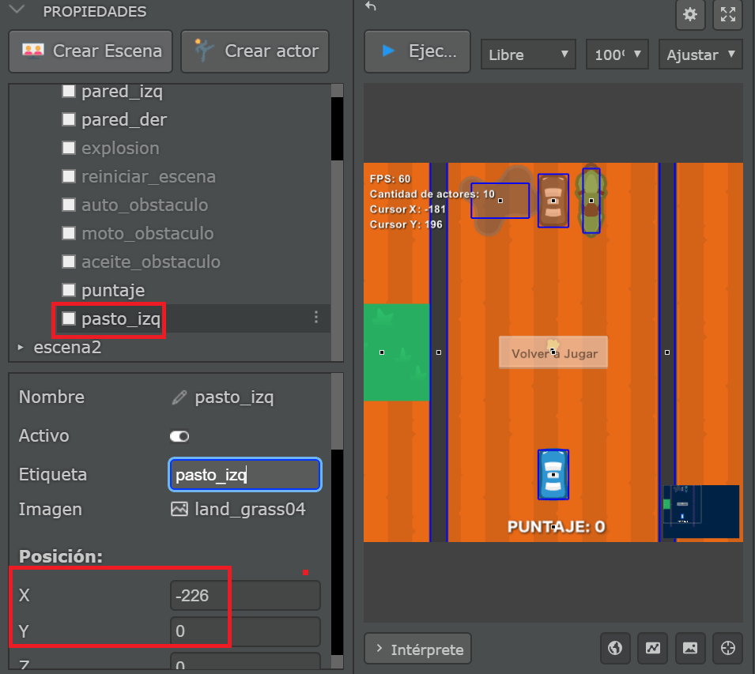
Ahora programaremos en el editor de código del actor “pasto_izq” el movimiento del mismo.
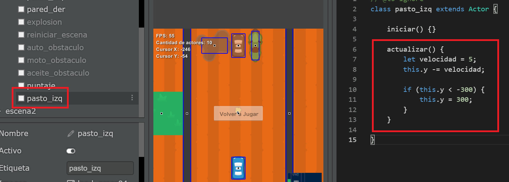
Está función lo qué hará será mover el actor hasta la coordenada -300 donde lo re-posicionará en la coordenada 300. Si duplicamos este actor tantas veces para cubrir el lado izquierdo, obtendremos algo como esto:
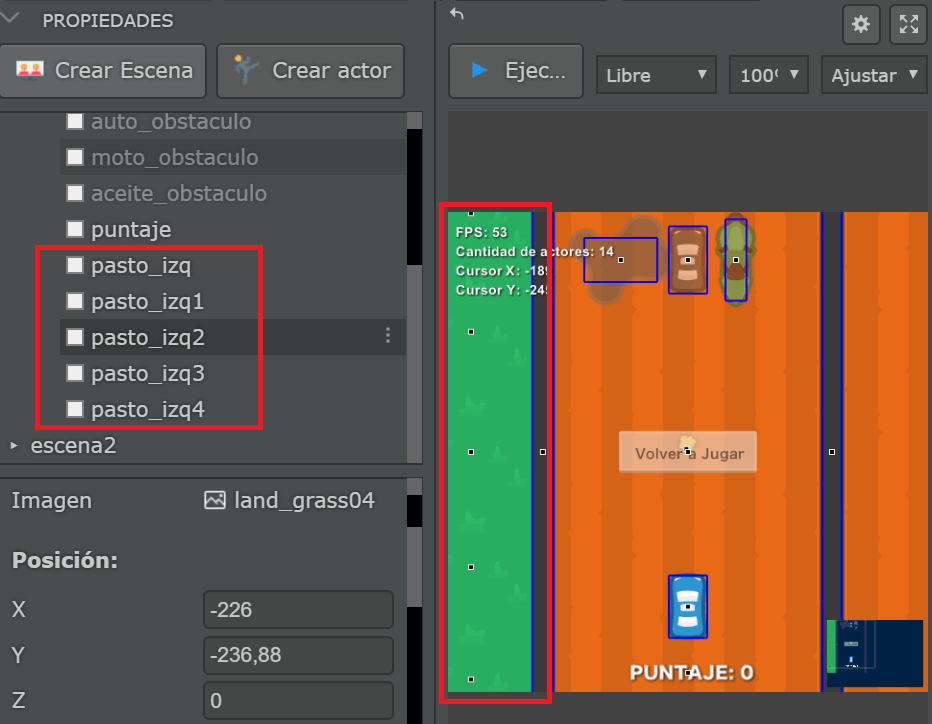
Ahora, por último, nos queda duplicar los 5 actores de pasto izquierdo para emular la hierba del lado derecho. Solo debemos cambiar el nombre y las coordenadas X,Y de cada nuevo actor para posicionarlo en su lugar correcto.
El resultado debería ser algo así:
¡Espero que te haya resultado útil este tutorial!